Choose storage by workload and correctness requirements, from transactions to analytics, search, documents, and objects.
Choosing a database starts with the operations the application must perform. A store provides more than persistence: it can supply indexes, concurrency control, analysis close to data and a boundary separating application code from storage management. Consider a workshop service that reserves machines, searches project descriptions and serves tutorial photographs. A reservation changes a scarce resource under concurrency. A search retrieves documents by words rather than by a known identifier. A photograph is a large object usually fetched as a whole. These operations share a user interface, but they ask storage to do different work. Listing them explicitly is more informative than beginning with a contest between SQL and NoSQL labels.
For each operation, write down its lookup key, result size, update frequency and required invariant. A machine cannot have two overlapping confirmed bookings. Search results may tolerate a brief indexing delay, while confirmation cannot depend on an arbitrarily stale availability count. Images may be immutable after publication, allowing long-lived delivery caches. This exercise can justify a relational source of truth for reservations and object storage for media without automatically requiring a separate search service. The first question is whether the simpler existing store can meet the search requirement. Every extra component introduces another update path, recovery procedure and opportunity for two representations to disagree.
Compare candidates using representative queries and failures. A flexible document shape does not remove the need to validate data; a schema does not mean change is impossible. A key-value interface makes a known-key lookup convenient, but an unplanned query may require a scan or a secondary index. Operational constraints also matter: backup restoration, migration, monitoring and the team's ability to diagnose problems are part of the architecture. Finish with an ownership map: which dataset is authoritative, which copies are derived, and which service changes each one. A good selection explains why the required guarantees are achievable with manageable complexity. It does not merely list features that the chosen product happens to advertise.
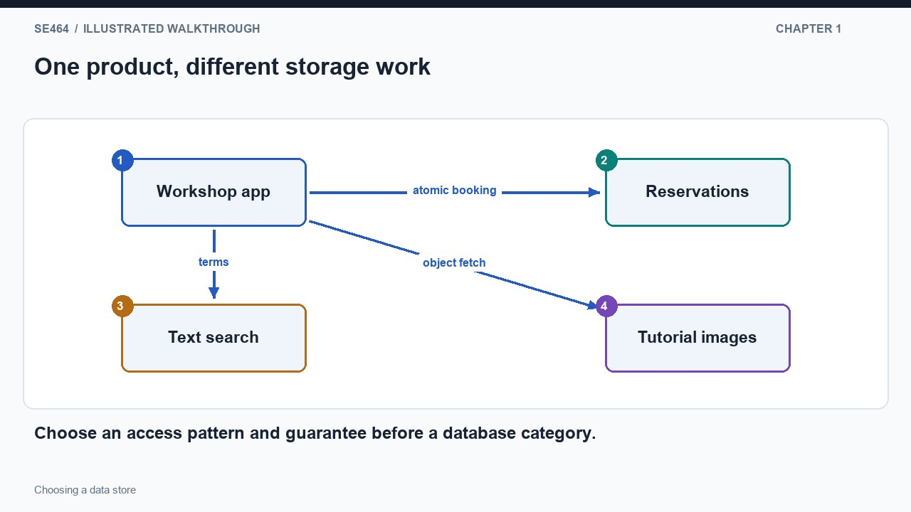
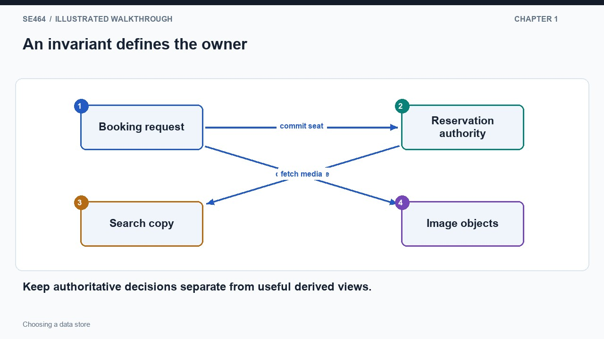
No. Large-object delivery and concurrent invariant-preserving updates have different access patterns and can justify different stores.
A checkout using a gift card changes several related facts: the remaining balance, an order and its line items. Suppose the balance is deducted but the process crashes before inserting the order details. The customer has lost purchasing power without a complete order. A database transaction groups the changes so they commit together or are rolled back together. This is atomicity. Draw a boundary around the balance update, order insertion and line-item insertion; the boundary expresses the all-or-nothing outcome. It does not by itself explain what happens when another checkout reads and changes the same balance concurrently. That requires considering isolation and the update protocol as well.
Let two requests each read a balance of one hundred and each attempt to spend eighty. If both independently decide that funds are sufficient and overwrite the balance with twenty, the system can create two orders while deducting only eighty. A safer approach performs an atomic conditional decrement that succeeds only if sufficient balance remains, checks the affected-row result, and creates the order within the same transaction. The losing request reports insufficient funds. Appropriate row locking or serializable execution can provide other valid protocols. If the order insertion then fails, the successful decrement rolls back. Trace both the competing-request path and the mid-transaction failure; they are distinct tests of correctness.
Distributed transactions add coordination because participants must agree on the outcome despite delay and failure. Keeping a related aggregate within one transaction boundary can simplify the design. An illustrative lock loop is not a production solution unless it also addresses ownership, expiry, crashed holders, stale clients and recovery. Retries create another problem: a client can lose the response after a transaction committed and then submit the same purchase again. An idempotency identifier linked to the recorded outcome can prevent an accidental duplicate. Storage selection should therefore ask which operations must be atomic together and which concurrency conflicts are expected. Prefer a well-supported transaction mechanism over rebuilding these guarantees from a few low-level read and write calls.
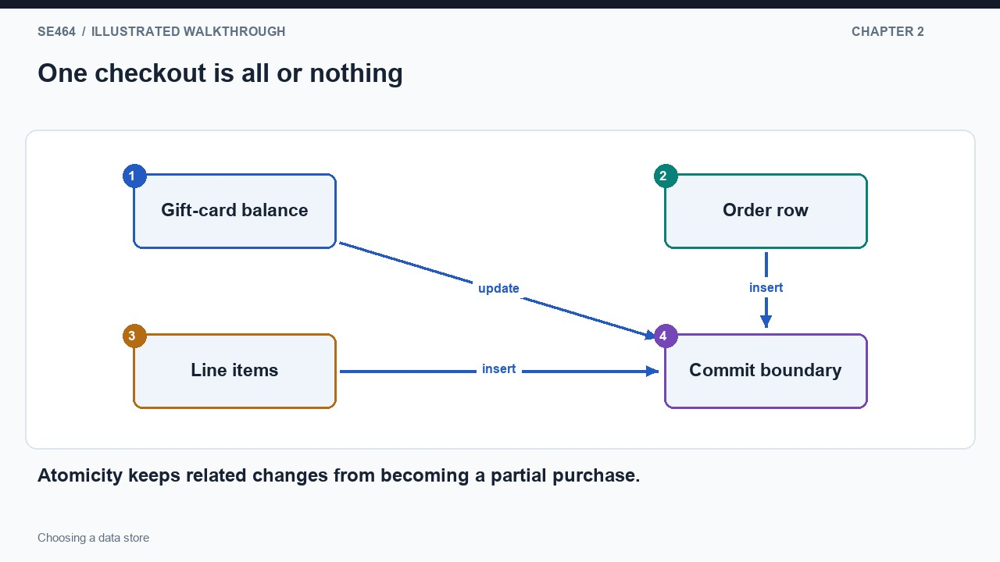
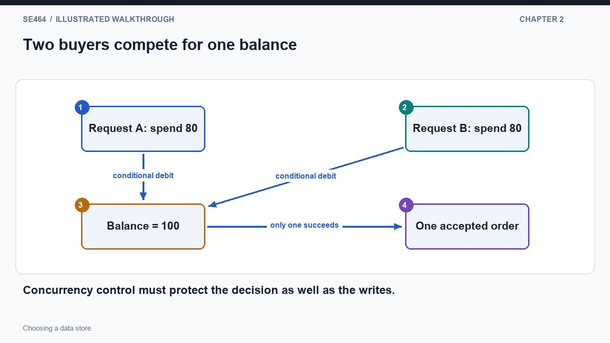
No. The operation needs appropriate isolation, locking or an atomic conditional update, plus balance validation and failure handling.
Operational requests usually touch a small part of a dataset: retrieve an order, update a delivery status or reserve one seat. Analytical questions often inspect a large fraction: over several years, which districts had the longest delivery times? The first workload values quick individual decisions under concurrency. The second may perform a few expensive scans and aggregations. Both can use tables and SQL, so the query language alone does not identify the right physical layout. A system optimized for thousands of tiny updates is not automatically optimized for a broad historical scan. Begin by tracing how much data the operation must examine and how much it ultimately returns to the application.
Suppose an analytical query needs district, duration and date from millions of delivery records, but not addresses, notes or package descriptions. A column-oriented layout can read the relevant columns together and compress repeated values. The engine groups rows and computes averages close to storage, returning a small result instead of shipping every raw event over the network. The diagram should show many stored rows becoming a few grouped results. This explains the benefit more clearly than saying that analytics needs a faster database. Parallel execution can divide large scans, but layout, compression, pruning and query shape also influence performance; not every analytical query requires a cluster or avoids indexes entirely.
Separating analytics from operational storage introduces a freshness boundary. If an ingestion pipeline updates the analytical copy every fifteen minutes, a dashboard can omit a recently completed delivery even though the operational transaction succeeded. A manager deciding whether a particular delivery is complete should consult the appropriate current source, while a historical trend may tolerate the delay. Record the ingestion watermark and expose freshness where it affects interpretation. Benchmark the actual mix of scans, joins and updates rather than selecting a category from the size of the dataset alone. The architectural goal is to isolate expensive analysis when useful, reduce unnecessary data transfer and preserve a clear explanation of which representation answers each business question.
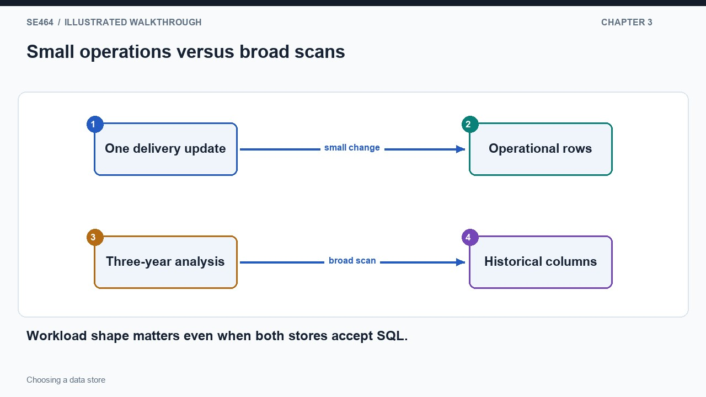
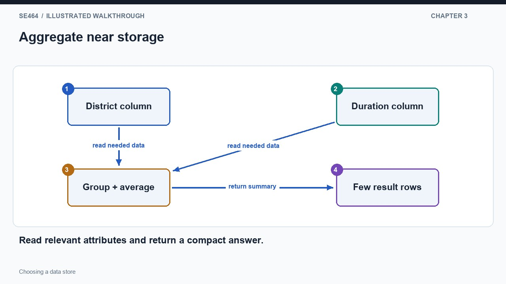
The calculation needs only selected attributes, so reading and compressing those columns can reduce I/O substantially.
A document store groups related nested information into an aggregate, such as a profile containing positions and education entries. That representation can match the object an application reads or updates, but a document is not automatically a good search index. Search asks a different question: which documents contain a term or satisfy several text conditions? An inverted index maps terms to document identifiers. If bronze appears in documents four, nine and twelve, while river appears in nine and fifteen, intersecting the lists finds document nine for an AND query. Ranking, tokenization and language handling add more rules, but the posting-list example exposes the core access path without scanning every document's text.
Time-series data suggests another arrangement. Store readings under a partition key composed of sensor identifier and day, then order records by observation time inside that partition. A request for one sensor's morning readings can find the partition and scan a bounded time interval. Hashing the partition key distributes partitions, while the within-partition ordering supports the range query. These are two different roles, so a hash-based design need not make every range query impossible. The diagram should show the device-and-day key selecting a partition before the time range is applied. A query across all devices may need another access path because it does not identify the same bounded destination.
Model the update path alongside the lookup. A changed document must eventually update its search representation, and deleted material must be removed from both. A very active sensor can create a hot or oversized partition even when the key design looks tidy; time bucketing bounds growth but needs sizing against actual rates. Secondary indexes and alternate tables provide useful access paths at a storage and maintenance cost. Product capabilities evolve, so use these abstractions to ask precise questions rather than memorizing historical feature lists. For each candidate, demonstrate the common query, the difficult query and the repair process after a partial update. The best model is the one whose cheap operations align with the workload and whose expensive operations remain manageable.
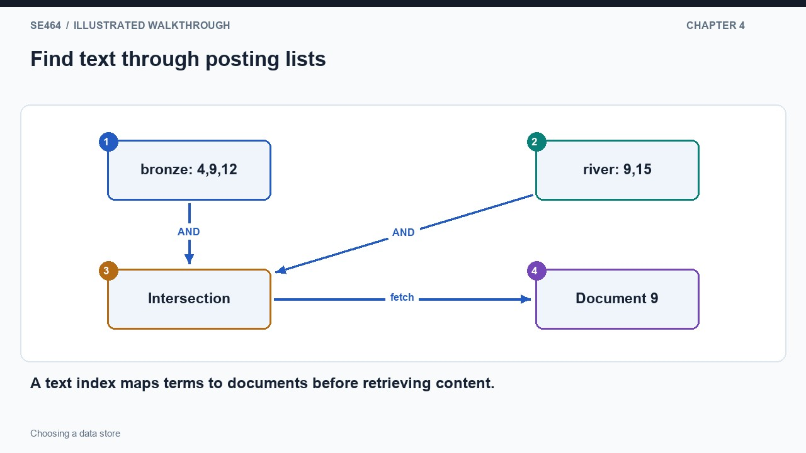
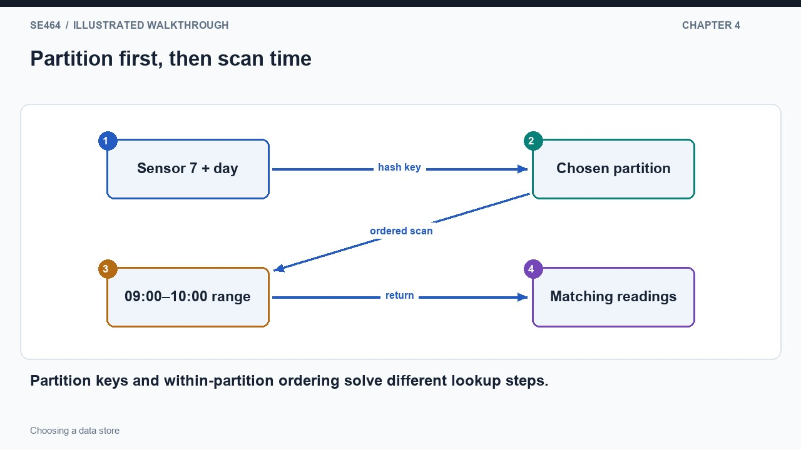
Find the document-ID list for each normalized term and return their intersection.
An application cache stores reusable values that help build responses. For example, every page may include the same leaderboard even though the rest of each page is personalized. Caching that leaderboard avoids repeating its calculation without requiring the entire HTTP response to be shared. A reverse-proxy cache operates at a different layer: it reuses complete eligible HTTP responses. Both can reduce load, but they have different keys, owners and invalidation rules. Draw the application between the browser and its value cache, then draw a response cache before the application. The placement makes clear which work is avoided by a hit at each layer and which work still happens.
In-memory stores can expose operations on structures such as sets, counters and sorted sets rather than treating every value as an opaque string. Updating one leaderboard score can then avoid reading, modifying and rewriting the whole ranking in application code. Fast access does not settle durability, however. Ask whether the ranking is authoritative or rebuildable from durable events, what happens after restart, and whether eviction is allowed. Memory is limited, so a cache may discard values according to an eviction policy. Expiry determines how long a cached copy remains eligible for reuse; it does not guarantee that the underlying fact has stayed unchanged during that interval.
A cached availability count illustrates the correctness boundary. The home page can display a slightly old count to reduce repeated reads, while the booking operation checks and changes the authoritative reservation record. Treating the cached count as permission to allocate the last place would turn a performance optimization into a correctness bug. Plan cache misses as well: after a restart, many simultaneous misses can overload the database that the cache normally protects. Request coalescing, controlled warming or other workload-specific policies can reduce that burst. A cache is therefore a complete data-flow decision involving source, key, update policy, expiry and recovery. Its software name or storage medium alone does not tell students whether losing its contents loses business data.
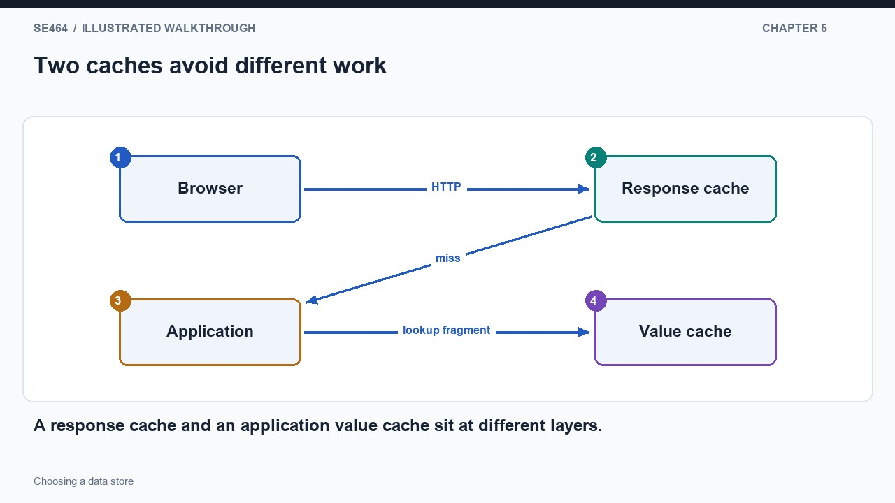
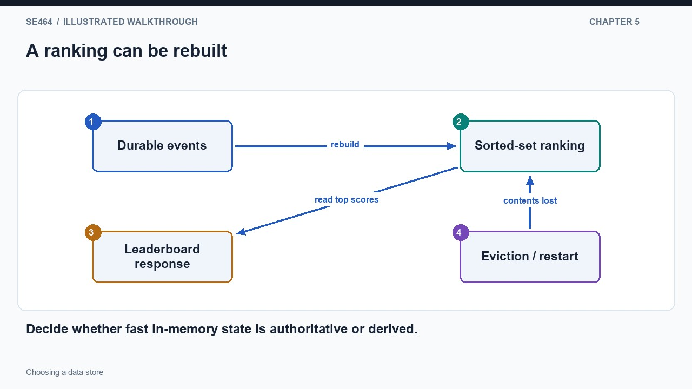
No. If it is designed as a rebuildable cache, the source records remain elsewhere and the leaderboard can be recomputed.
Files, objects and blocks expose different interfaces. A network filesystem provides familiar paths and file operations, which can be valuable when an existing program expects to open and modify files. An object store provides named objects through a service API and is often convenient for images, recordings and other large media. A block volume exposes lower-level storage on which a filesystem can be built; it is not itself a shared file service. These distinctions affect application behavior. Replacing a mounted directory with an object bucket is not simply a configuration change if the program relies on operations or coordination semantics that the object interface does not provide.
Consider a recording archive. Store the audio object under a stable identifier and keep searchable metadata in a database. A browser fetches media through a delivery URL while the application queries metadata by date, topic or owner. This avoids forcing large media bytes through the same query path as structured records. But the two stores create a workflow: an upload can succeed while the metadata transaction fails, leaving an abandoned object. Publishing metadata before the upload is complete can expose a broken link. The diagram should include the publish step after durable upload, plus a cleanup or retry path. Choosing specialized storage does not remove the need to coordinate its lifecycle with the rest of the application.
Large-scale processing adds a locality question. A distributed filesystem and processing framework can place computation near stored partitions to reduce data movement. Other architectures deliberately separate compute from object storage, trading different operational and performance properties. Neither arrangement is universally best. Finish the selection by identifying the required interface, dataset owner, identifiers, access control, recovery path and expected transfer volume. Test restoration as well as normal retrieval. If a simple database and object store satisfy the workload, adding more storage categories should need a concrete justification. The completed architecture should explain where each byte lives and how users recover from a failure between steps, rather than presenting an assortment of products without a coherent data flow.
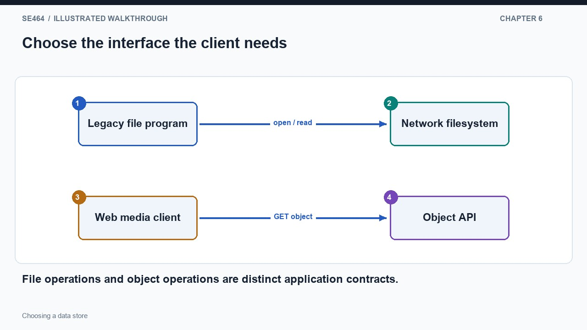
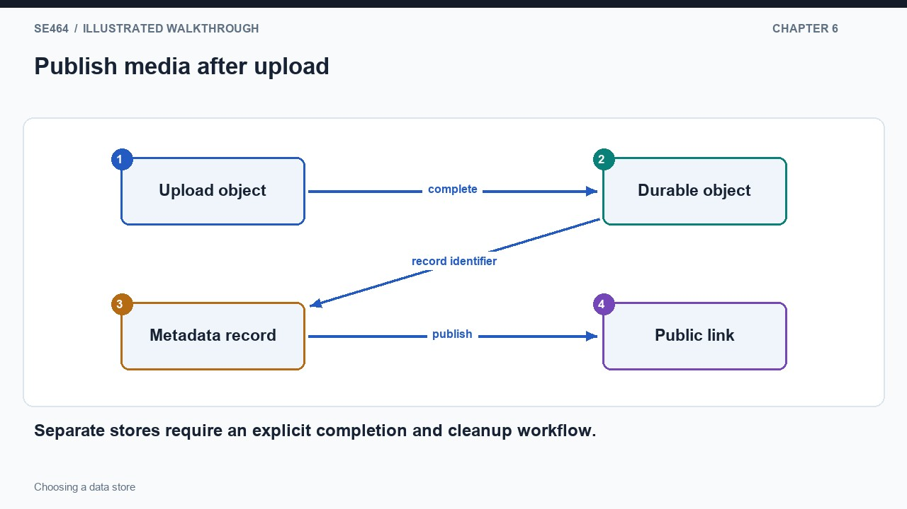
Not necessarily. It must check required file operations and semantics against the object API and adapt its access pattern.
Atomicity does not guarantee the required isolation. Both may read the same value; use locking or an atomic conditional decrement with balance checks and rollback behavior.
Store a posting list of document IDs for each term, then intersect the two lists; index analysis and normalization determine token matching.
Object storage for large media objects; a transactional database for seat-count invariants; a search engine/inverted index for text retrieval. Integrate them with explicit ownership and update propagation.
Choose storage roles for an online course service with enrolments, uploaded videos, text search, and yearly analytics. Explain how derived stores stay synchronized without becoming independent sources of truth.
Use a transactional source for enrolment invariants, object storage for large media, a search index for text retrieval, and an analytical store when broad scans justify one. These are workload-based candidates rather than mandatory products. Define authoritative ownership, change propagation, rebuildability, freshness, access control, and failure recovery for derived indexes and reports.
Questions-only worksheet · Worked answer sheet
A small legal-document team has twelve analysts, strongly related case records and frequent ad hoc joins. Its existing relational database meets measured latency and capacity targets. A proposal says to migrate everything to a document store because all SQL databases accept writes on only one machine and therefore cannot scale. No additional workload forecast or product limitation is provided. Which architectural response is best supported by this evidence?
Best answer: D.
Retain the working relational design while investigating a concrete bottleneck or growth requirement. The existing joins and relationships fit its workload, and the proposal’s claim about all SQL systems is false: a relational interface does not universally dictate a single write topology. A document model might still help a particular aggregate-oriented workload, but that needs evidence and a migration cost analysis. Compare candidate products on actual query patterns, integrity guarantees, operational complexity and growth forecasts rather than treating the SQL/NoSQL label as a capacity measurement.
A storage migration is justified by requirements and measured limitations, not an absolute claim about an entire database family.
A museum uses an in-memory store for a popularity leaderboard that can be rebuilt nightly. A developer proposes also storing the only copy of accepted artifact-loan agreements there because writes are fast. The configured policy evicts least-used keys at its memory limit, and disk persistence can lag. Design storage roles for both workloads and describe what should happen after a total cache loss. Keep your answer about guarantees rather than brand names.
Keep authoritative loan agreements in a durable transactional store with the required acknowledgement and backup/recovery policy. Use the in-memory store for a derived leaderboard, and rebuild it from durable visit or vote records after loss. If fresh rankings matter, replay changes since the latest checkpoint rather than waiting for the next night. Do not rely on eviction-prone, asynchronously persisted keys as the sole accepted agreement record. The same software might support stronger configurations, but the stated configuration does not meet this workload’s durability requirement.
The decision follows the role and configuration of a store. Fast reads, persistence options and authoritative durability are not interchangeable promises.
An operations report scans 18 million equipment records. Each full row occupies 240 uncompressed bytes, but the report needs only a 4-byte site code and an 8-byte energy value. Assume a column-oriented layout can read exactly those columns and compress them by 3:1; ignore metadata, indexes and caching. Calculate bytes read for each layout and the reduction factor. Then explain why those figures alone do not prove that the transactional database should be replaced.
The row scan reads 18,000,000 × 240 = 4,320,000,000 bytes, or 4.32 GB in decimal units. The selected columns total 12 bytes per record; after 3:1 compression the scan reads 18,000,000 × 12 / 3 = 72,000,000 bytes, or 72 MB. The ideal read-volume reduction is 60-fold. Actual runtime also depends on decompression, execution, parallelism and storage. An analytical copy may deliver this benefit while the transactional source retains update and integrity responsibilities; freshness and ingestion costs must also be considered.
Reduced scan volume is a strong workload-specific reason for columnar analytics, not a universal replacement argument.